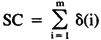
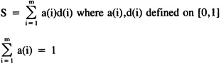
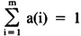
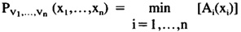
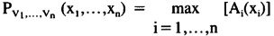

by Abraham Kandel
CRC Press, CRC Press LLC
ISBN: 084934297x Pub Date: 11/01/91
|
|
Fuzzy Expert Systems
by Abraham Kandel CRC Press, CRC Press LLC ISBN: 084934297x Pub Date: 11/01/91 |
| Previous | Table of Contents | Next |
First, consider the SC structure. Initially, there were three rules for determining an SC value (true or false). It was an AND, OR, or COUNT. As described in the previous section, it is, in fact, unnecessary to make this distinction, as all can be treated as substantiation of a certain number in a list. In this structure, we are still dealing with crisp numbers. However, we can define the generalized SC in the crisp sense by:

where
δ(i) = 1 if the ith antecedent is substantiated
0 otherwise
Then SC is substantiated if SC ≥ n, where n is the required number of premises 1 ≤ n ≤ m. We, therefore, have essentially a threshold value for the substantiation, where the threshold is determined by the number of premises required to hold. The same system can be applied to rule substantiation but, in this case, since the antecedents are always conjoined, n = m.
If we include the generalization described in the last two sections, we now have two new values to deal with in the rule inference scheme. First, there is the a(i) value attached to the ith antecedent of every rule and SC. Second, there is the user response for each symptom, which we shall denote d(i). The following definition is made:

where a(i) is the weighting factor for the ith antecedent, d(i) is the degree of presence of the ith antecedent, and m is the total number of antecedents for the rule or SC in question. The result of evaluation of an SC is thus a numerical value. The next question is how to interpret this numerical value.
We can still consider substantiation to be a thresholding problem, but the question is now how to determine the threshold in the fuzzy case. The determination of the threshold depends on the intent of a rule or SC, and must be arrived at in conjunction with experts. For example, consider the SC:
a(i)
.2 History of Chronic Atrial Flutter
.5 Atrial Flutter Resolved on 2nd ECG
.3 Heart Rate 120
which was an AND in the original system. One could clearly agree that all symptoms must be present in order to substantiate the SC. However, the second question is to what degree each symptom must be present. If one chooses a value of .7, then the threshold for the SC would be
S = (.7)(.33) + .7(.33) + .7(.33) = .7
if equal contribution of antecedents is assumed. However, since we have the requirement:

the value will, in fact, be .7 regardless of the weighting factors on each antecedent. The threshold will change, however, if a different value for each symptom is required to confirm presence of a symptom.
If the value of s exceeds the threshold for an SC, the’s value is used in the rule, otherwise 0 is used.
As an example, consider the run in Figure 5 and the weighting factors a(i) in Figure 8. The following computations would take place:
S = (.5)(.5) + (.5)(.9) = .25 + .45 = .70 > .5
SC13
S = (.6)(.8) + (.4)(.8) = .48 + .32 = .80 > .7
Rule 400
(.3)(.7) + (.1)(1) + (1)(.7) + (.1)(.7) + (.2)(.8) + (.2)(.5) = .71 > .7
Thus, the rule would be substantiated.
In order to put the previous example on a sound theoretical basis, approximate reasoning techniques have been incorporated.46,47
As suggested by Zadeh,20 expert system data can be expressed in the form:
V is A
where V is a variable and A is its current value. An example from the EMERGE chest pain rule base would be “blood pressure is low”. To give some more precise meaning to the word “low”, fuzzy subsets can be used. Assume A is a fuzzy subset of a base set. For the preceding example, we consider the base set to be the interval of possible blood pressures [0,300]. Let X be the set of all values that V can assume. Then one can consider the possibility distribution Px(x) over X so that:
Px(x) = A(x)
where A(x) on the unit interval [0,1] is the grade of membership for each x ∈ X.
More commonly, EMERGE has statements of the form “sweating is present” as implied by the SC in Figure 8. The user response then indicates the degree of presence of the symptom.
Following the work by Yager,32 for antecedents in conjunctive form:
V1 is A1 AND V2 is A2 is A2 OR… Vn is An
then

where Ai is the membership function for the ith proposition. For disjunctive form:
V1 is A1 OR V2 is A2 OR… Vn is An
then

| Previous | Table of Contents | Next |